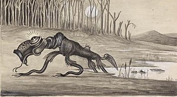

Myth 1: lake Burley Griffin fills up lakes in New Zeland .
False
There is no evidence to prove this however it is likely that water has evaporated and landed in lakes within New Zeland
Myth 2: Bodies of cadets from Duntroon were never found
False
When the cadets drowned in Lake George the police records show all cadets found however the public still does not believe all bodies have been found
Myth 3: A large cat was found in the early 1830's
False
During the early settlement in Australia the livestock was breeding 'like rabbits' so it is likely it was mistaken for another animal.

Myth 4: Is the Bunyip real?
False
This mythical creature is believed to be a mutation of some animal scientists do not believe this animal exisits.
Capabilities built by the Government will leak
False
The government have strict protocols and their cyber security it built tight so it is unlikely anything will be leaked without the establishment knowing about it.